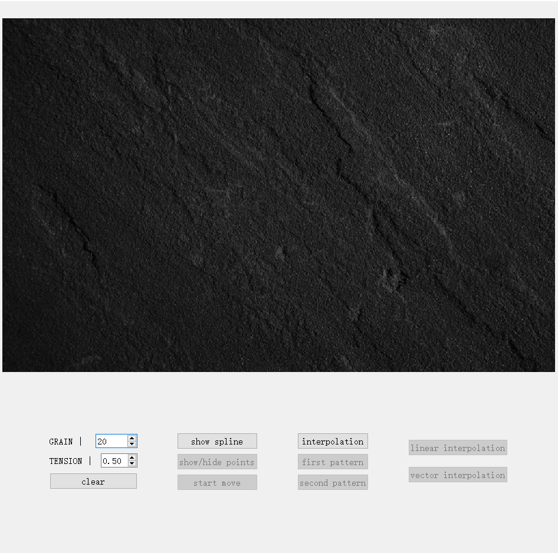

AliciaRui
Home
About
Portfolio
Game
ECHO
Father and Son
Illusion: Find Murder
Project_Demo
Bliss
Drawing Board
Curve & Interpolation
Essay
DEMO: Curve and Interpolation
Qt 5.12 ----c++

Kishōtenketsu Theory in Game Design Introduction Kishōtenketsu is a narrative structure commonly used in Asia, which first appeared in Chinese Yuan Dynasty poetic style. This structure has four stages: Introduction, Development, Twist, and Conclusion. It has also been widely used in games. This paper introduces the application of Kishōtenketsu in game design by giving examples and discussing the two advantages of this structure for game design. Keywords: Kishōtenketsu; Game Design; Narrative Structure; How Kishōtenketsu is used in games? Koichi Hayashida (2002) proposed the application of Kishōtenketsu in game design, where he split the way to introduce individual game mechanics into the following four steps. 1 Introduce a new gameplay mechanic in a safe environment 2 Offer a slightly more complicated scenario to use the mechanic 3 use the mechanic in an unexpected way 4 go through boss challenges with comprehensive use of this mechanic Such a four-step structure is also widely used in the level design of Super Mario: Odyssey. The uproot challenge in the wooded kingdom can be a good example. In the first stage, players first met an uproot, a creature that can stretch many times its height forward. At this point there will be a safe area for players to explore freely, players can manipulate uproot to stretch, smash bricks and tree fruit or attack other uproots. In the second stage, there appears more complex terrain and forces players to learn skills such as jacking up panels, breaking bricks, and moving between complex platforms. Players are designed to follow the rhythm to stretch uproot to get through this terrain. The third stage is combined with timing. Players need to advance around a towering column to the very top, paying attention to the appearance of greenery platforms, while controlling jumps to avoid moving obstacles. In the final stage, players are guided to use all the previous mechanics in the boss fight, which means they have to top off the bricks to break the boss and then give it a fatal blow. Kishōtenketsu is not only reflected in Super Mario: Odyssey, but also in numerous other games, such as The Legend of Zelda games, It Takes Two, etc. It is widely used in game design because it assists designers create mind-flow experiences and helps control the pace of levels. Mind-flow Experience Shaping, Immersion Enhancement The flow theory was originally developed by psychologist Mihaly Csikszentmihalyi, who believed that people who enter a state of mind flow become completely focused and immersed in their current activities and situations, experiencing a sense of accomplishment and forgetfulness. He proposed the original flow model, while Chen Sing-Han (2006) pointed out that flow in game design only needs to encapsulate three of the important elements, which are the balance between player ability and challenge, the sense of control, and the sense of satisfaction. First, players are introduced to the mechanic at a minimum, while low-level challenges and safe environments are configured for players to explore on their own to stimulate their curiosity. In this stage, players' skills and challenges are at a low level; Second, they are guided to explore and gain proficiency in skills by breaking through mandatory instruction and barriers in the scenario, which corresponding to the middle part of the mind-flow model; Third, players are given a series of tasks in a new direction, and they are asked to actively think about it from a fresh perspective. In this stage, players’ skills and challenges both rise to new heights; Final stage verifies the players’ ability through boss battles, when both players’ skills and the difficulty of challenges reach their peak, corresponding to the final stage of the mind-flow model. The Kishōtenketsu structure divides the level into four stages, in which players’ skills and the difficulty of the challenge increase simultaneously, so that players can intuitively and clearly have a feeling of their own growth and thus more easily reach the state of mind flow. Level Pacing Control, Freshness Maintenance Compared to introducing players to all the gameplay applications at once, Kishōtenketsu theory assists designer to gradually show players the application scenarios of the new mechanics and even stimulate their desire for active exploration. At the same time, it shorten the time it takes for players to adapt to the new mechanism and instead focus on each new application scenario in steps until they finally encounter the boss battle where they need to combine all the previous skills to complete the comprehensive test. For example, in the first stage of the above-mentioned level, uproot and its manipulation methods are introduced; then in the second stage, new organs (such as blocking, bricks, etc.) and various rewards are introduced; in the third stage, players are guided to discover the floating time difference possessed by uproot and use it to pass the time-limited puzzle; The last stage aggregates all the previous application scenarios and coalesces them in the same boss design. Therefore, by adapting such a level design law, designers can better split the level design, master the progress and rhythm, and avoid a certain part of the experience to be too long or too short. At the same time, it allows players to constantly receive new ideas, avoiding the boredom caused by simply repeating experiencing the same application scenario, and keeping the players' freshness and desire to explore the game. Conclusion This paper introduces Kishōtenketsu, a widely-used level design structure that breaks down the introduction of new mechanics into four steps within a level. This paper also analyzes the advantages of this level design structure by using the example of Super Mario: Odyssey, which is able to shape the mind-flow experience and keep the players fresh. In the future, as the game world evolves and the gameplay mode iterates, the new level design structure may be changed continuously. Reference Csíkszentmihályi, M. (1990). 'Flow: The Psychology of Optimal Experience,' Harper & Row. Welcome to flow in game. Welcome to flow in games. (n.d.). Retrieved November 29, 2022, from http://www.jenovachen.com/flowingames/
About
DATE |
2021
PLATFORM |
PC
TOOL |
Qt 5.12
Source Code
Tags
Cardinal Curve
Interpolation
c++
points
Shanghai China
+86 13671946301
ruiqialicia@yeah.net